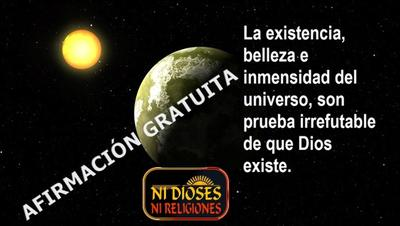

En filosofía y lógica informal, una afirmación gratuita es una conclusión lanzada al aire sin pruebas, sin razones, y sin disposición a someterse a verificación. Es el clásico «porque sí», el «porque lo digo yo», revestido de solemnidad. En publicidad vende productos; en política gana aplausos; y en religión, con demasiada frecuencia, funda dogmas.


Una afirmación gratuita consiste en manifestar algo sin aportar evidencia, confiando únicamente en la autoridad, el énfasis o la tradición. Se conoce también como ipsedixismo, término popularizado por el filósofo utilitarista inglés Jeremy Bentham (1748-1832), quien criticaba a quienes pretendían convertir sus prejuicios en mandatos categóricos. Proviene de la expresión latina «ipse dixit», que significa literalmente «él mismo lo dijo». Es decir, basta con que lo diga quien tiene poder o prestigio.
En el ámbito judicial, una afirmación sin pruebas se desestima. En ciencia, una hipótesis debe someterse a experimentación, revisión y falsabilidad. Pero en religión, la afirmación gratuita no sólo se tolera: se acepta taxativamente, dogmáticamente. Veamos algunos ejemplos:
«El universo existe porque fue creado, y fue creado por Dios.»
«El universo fue diseñado inteligentemente y finamente ajustado para el ser humano, y eso lo hizo Dios.»
«Sin Dios no hay ni puede haber moral.»
«Ese Dios creador del universo y de la moral, es el dios de la Biblia, ningún otro.»
¿Qué evidencia se ofrece? —Ninguna. Con frecuencia, citas de textos sagrados que se presentan como fuentes infalibles… pero cuya infalibilidad es, a su vez, otra afirmación gratuita. Es decir, se asume como probado aquello que precisamente está en discusión.
Y cuando la «evidencia» no es textual, suele apelarse a anécdotas, sentimientos religiosos o supuestas revelaciones personales. Sin embargo, una emoción intensa no es ningún argumento; una tradición antigua no es una demostración, y una experiencia subjetiva no es ninguna prueba universal.
Y entramos aquí a un terreno más delicado. Una afirmación gratuita puede ser simplemente un error, pero también, en muchos casos, dentro de estructuras religiosas organizadas, puede ser una mentira consciente.
Como sabemos, una mentira consiste en expresar algo contrario a lo que se sabe, se piensa o se siente. Y no es un secreto que existen clérigos, pastores o líderes religiosos que han perdido la fe, pero continúan predicando por conveniencia: por estatus, ingresos, presión social o miedo a perder su comunidad. Aunque también hay otros que no tenían fe desde el principio, y que encontraron en su ministerio religioso sólo una forma de vender ilusiones, de ganar cierto prestigio, y aprovecharse de los más vulnerables para vivir cómodamente sin complicarse. Por supuesto, no es una acusación universal, entendemos que debe haber pastores y clérigos sinceros que creen lo que predican, pero sospechamos que son una minoría.
El caso es que cuando alguien afirma desde el púlpito algo que ya no cree, no estamos ante un simple error epistemológico, sino ante una distorsión deliberada. Y esa distorsión se sostiene gracias a la autoridad institucional y a la incapacidad de los fieles para exigir pruebas.
Pero ocurre algo interesante: en un tribunal, el juez exige evidencia; en un laboratorio, el científico exige replicabilidad, y en la vida cotidiana, pedimos pruebas antes de confiar en un desconocido. En la religión, sin embargo, suele suspenderse esa exigencia crítica. Porque se considera virtud aceptar sin ver; creer sin examinar; afirmar sin probar. Y más bien se elogia la fe, entendida como confianza sin evidencia.
Por supuesto, desde una perspectiva filosófica laica, esto representa un doble estándar epistemológico: se aplican criterios rigurosos para lo cotidiano, pero se relajan para lo trascendente. Entonces, una persona que ama la verdad —no la verdad cómoda, sino la verdad contrastada— tiende a formular preguntas incómodas: ¿Qué pruebas sostienen esa creencia? ¿Podría estar equivocada? ¿Qué evidencia la refutaría?
Y surge en muchos casos el ateísmo, no de una rebeldía emocional, sino de una negativa a aceptar afirmaciones gratuitas como fundamento de la realidad. Porque si la existencia de un «Dios», de un alma inmortal o de un plan cósmico no puede demostrarse con el mismo rigor que exigimos en otros ámbitos, entonces la postura intelectualmente honesta sería la suspensión del juicio o la negación provisional.
Como ateos comprendemos que el amor por la verdad implica estar dispuestos a aceptar conclusiones frías, incluso desalentadoras. Implica reconocer que el universo puede no estar diseñado para nosotros, que no hay justicia cósmica garantizada, que no existe un supervisor invisible corrigiendo errores históricos. Y paradójicamente, esa actitud —lejos de ser nihilista— es profundamente ética. Porque si no hay autoridad sobrenatural que garantice la moral, entonces la responsabilidad recae enteramente en nosotros.
Es evidente que las religiones se sostienen fundamentalmente sobre afirmaciones que nunca han sido probadas, y que por lo general ni siquiera intentan serlo. Y cuando estas afirmaciones se blindan contra la crítica apelando a la autoridad o a la tradición, estamos ante el ipsedixismo. Pero cuando además se sostienen a sabiendas de su fragilidad o falsedad, entramos en el terreno de la mentira.
Frente a ello, el pensamiento crítico no es arrogancia, es coherencia. No es rebeldía gratuita, es responsabilidad intelectual. No es resentimiento, es amor por la verdad. Y quien ama la verdad —aunque no prometa consuelo eterno— difícilmente se conformará con un «porque sí».
[Godless Freeman]
Comentarios
Comments powered by Disqus